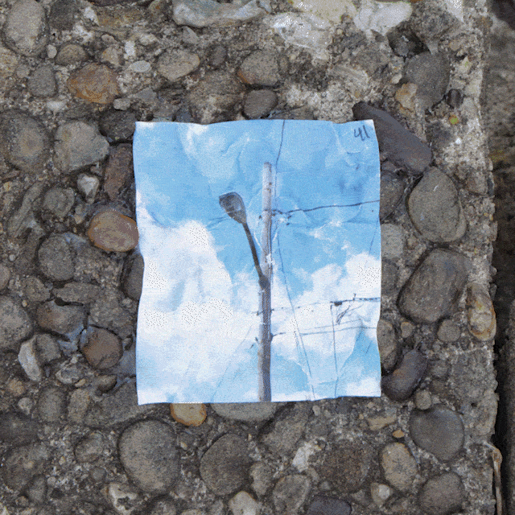
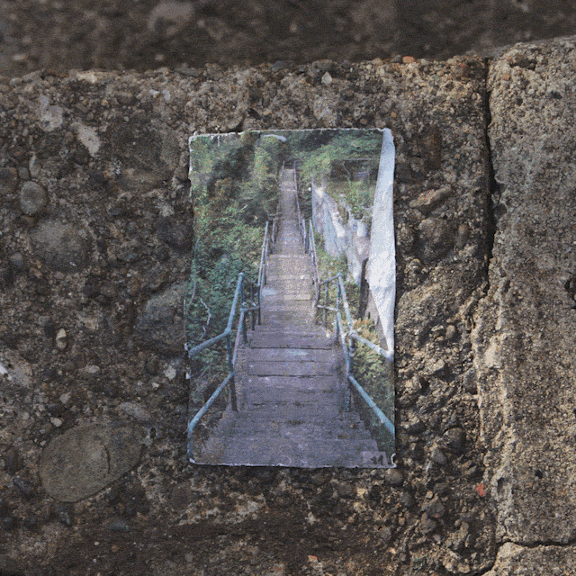
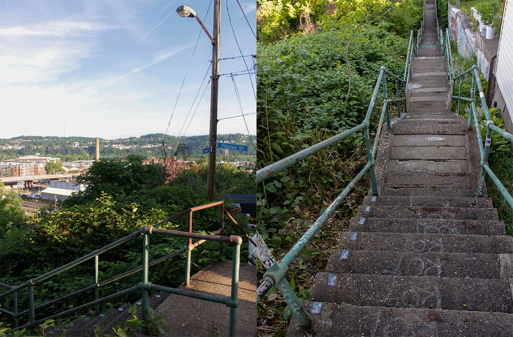

That concept lead me to the final results: these "comics to be read at walking speed".
On each step, I take a photo of the same view. Those photos are printed, then wheatpasted to the same place I was standing when I took it. Each wheatpasted image was photographed again, making it a photo of a photo set in the place it was taken.
As someone walked the stairs, they would see the image's perspective change precisely at their pace of travel. I documented the images in animation form because it best highlights their tactility and progression.
  